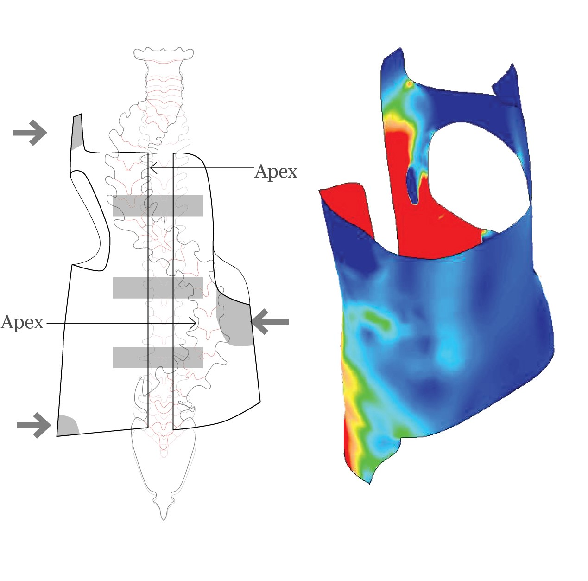
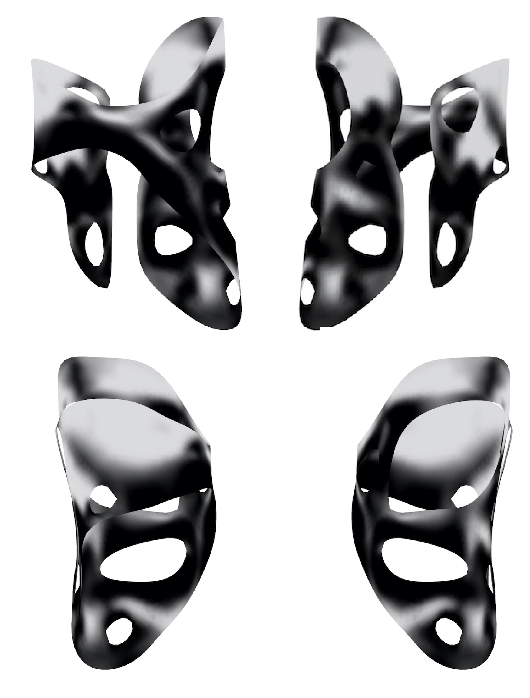

Working with the medical device company
UNYQ , we created a new type of SLS printed scoliosis brace design.
UNYQ's mission is to fight against the stigma associated with wearing a medical device by infusing a sense of uniqueness in every product.
We improved upon their design process, by utilizing all the opportunities additive manufacturing affords to create an appealing, breathable and
lightweight solution.
Press Release: Scoliosis Brace

Typical scoliosis braces are shaped based on the patients body and unique spine curvature. The brace is typically thermoformed on a mold, making
it inconvenient to add patterns and remove excess material.

Then, rather than place the pattern of the brace randomly on the surface, we did another FEA to locate areas under less stress
and introduced porosity.